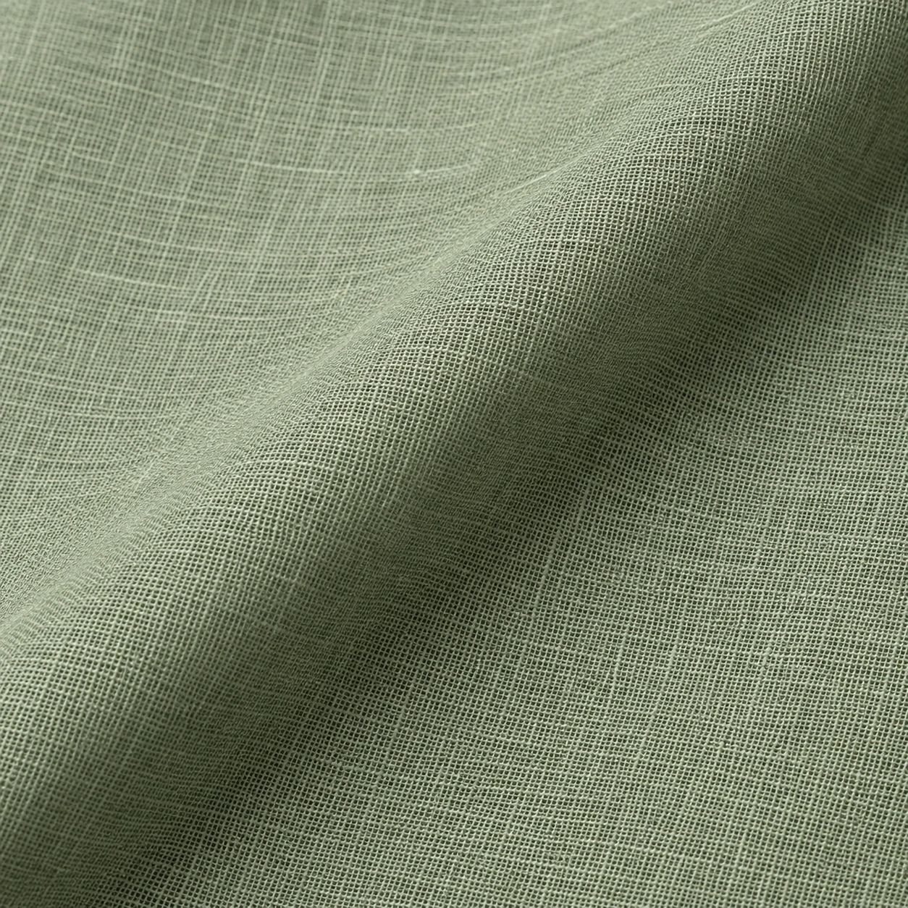

LZ-01
LZ-01Lawn / Ivory
Sahar Lawn
Fine plain-weave direction
Guide PKR 2,990↗

Catalogue / 01
Light, useful cloth for the rhythm of ordinary days.
The edit
From lawn and latha to subtle dobby, this edit traces lighter surfaces, crisp plains and calm colour.
These are visualized fabric concepts. Open a cloth study for its colour, intended use and an illustrative PKR budget.
Explore the other editShowing 10 cloth studies
Prices in PKR / illustrative
Try another shade or clear your filters.
Mockup prices are illustrative PKR fabric budgets informed by the supplied market dossier. They are not LOOMZ offers or verified stock prices. Fabric cut, composition, width, care, availability and stitching quote are confirmed before an order.
Your next step
Explore the tailoring service or prepare an inquiry with a cloth reference.